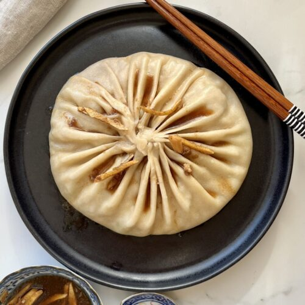

The name tangbao or tangbaozi refers to a broad group of steamed Chinese soup-filled dumplings. Depending on the origin, dumplings can be made with leavened or plain dumpling dough which is usually wrapped around a gelatinous filling, twisted and sealed at the top, and then steamed. While they steam, the firm filling (usually made with minced pork or crab meat) transforms into a flavorful soup, which stays safely secured inside the bun. Due to the nature of this Chinese delicacy, they are always served immediately after steaming, so the soup stays liquid and hot.
Meal prep time : 4 hours 25 minutes
Servings : 8